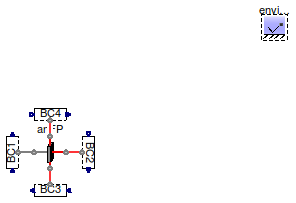
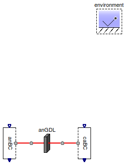
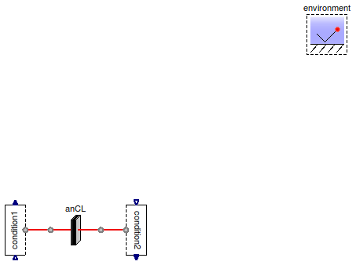
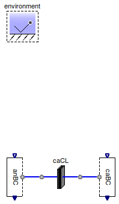
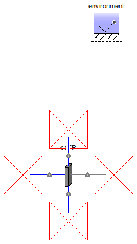

Table of Contents
- User's Guide
- Blocks
- Conditions
- Assemblies
- Regions
- Subregions
- Phases
- Species
- Chemistry
- Connectors
- Characteristics
- Units
- Quantities
- Utilities
- Icons
Download
- Latest version (**Empty; please check back soon or contact kdavies4 at gmail.com.)
FCSys.Regions.Examples
ExamplesInformation
Extends from Modelica.Icons.ExamplesPackage (Icon for packages containing runnable examples).Package Content
| Name | Description |
|---|---|
| Test the anode flow plate | |
| Test the anode gas diffusion layer | |
| Test the anode catalyst layer | |
| Test the proton exchange membrane | |
| Test the cathode catalyst layer | |
| Test the cathode gas diffusion layer | |
| Test one catalyst layer to the other | |
| Test one gas diffusion layer to the other | |
| Test the cathode flow plate | |
| Test one flow plate to the other |
 FCSys.Regions.Examples.AnFP
FCSys.Regions.Examples.AnFP
Test the anode flow plate

Information
Extends from Modelica.Icons.Example (Icon for runnable examples).
Parameters
| Type | Name | Default | Description |
|---|---|---|---|
| NumberAbsolute | psi_H2O | environment.psi_H2O | Mole fraction of H2O at the inlet [1] |
| NumberAbsolute | psi_H2 | environment.psi_dry | Mole fraction of H2 at the inlet [1] |
| TestConditions | testConditions | Test conditions |
Modelica definition
model AnFP "Test the anode flow plate" extends Modelica.Icons.Example; parameter Q.NumberAbsolute psi_H2O=environment.psi_H2O "Mole fraction of H2O at the inlet"; parameter Q.NumberAbsolute psi_H2=environment.psi_dry "Mole fraction of H2 at the inlet"; output Q.Potential w=anFP.subregions[1, 1, 1].graphite.'e-'.Deltag[1] if environment.analysis "Electrical potential"; output Q.ResistanceElectrical R=w/zI if environment.analysis "Measured electrical resistance"; output Q.ResistanceElectrical R_ex=anFP.L[Axis.x]/(anFP.subregions[1, 1, 1].graphite. 'e-'.sigma*anFP.A[Axis.x]*anFP.subregions[1, 1, 1].graphite.epsilon^1.5) if environment.analysis "Expected electrical resistance"; AnFPs.AnFP anFP; // Conditions Conditions.ByConnector.BoundaryBus.Single.Sink anBC[anFP.n_y, anFP.n_z](each graphite( 'inclC+'=true, 'incle-'=true, redeclare Conditions.ByConnector.ThermalDiffusive.Single.Temperature 'C+' (set(y=environment.T)), 'e-'(materialSet(y=0)))); Conditions.ByConnector.BoundaryBus.Single.Source caBC[anFP.n_y, anFP.n_z]( each gas( inclH2=true, inclH2O=true, H2( materialSet(y=zI/2), redeclare function thermalSpec = Conditions.ByConnector.Boundary.Single.Thermal.heatRate, thermalSet(y=0)), H2O( redeclare function materialSpec = Conditions.ByConnector.Boundary.Single.Material.pressure, materialSet(y=environment.p_H2O), redeclare function thermalSpec = Conditions.ByConnector.Boundary.Single.Thermal.heatRate, thermalSet(y=0))), each graphite('incle-'=true, 'e-'(materialSet(y=-zI), thermalSet(y= environment.T))), each liquid(inclH2O=true, H2O(redeclare function thermalSpec = Conditions.ByConnector.Boundary.Single.Thermal.heatRate, thermalSet(y=0)))); Conditions.ByConnector.BoundaryBus.Single.Source anSource[anFP.n_x, anFP.n_z] (each gas( inclH2=true, inclH2O=true, H2(materialSet(y=-testConditions.Ndot_H2), thermalSet(y=environment.T)), H2O(materialSet(y=-testConditions.Ndot_H2O_an), thermalSet(y=environment.T)))); Conditions.ByConnector.BoundaryBus.Single.Sink anSink[anFP.n_x, anFP.n_z](gas( each inclH2=true, each inclH2O=true, H2O(materialSet(y=fill( environment.p, anFP.n_x, anFP.n_z) - anSink.gas.H2.p)), H2(materialSet(y=anSink.gas.H2O.boundary.Ndot .* anFP.subregions[:, anFP.n_y, :].gas.H2O.v ./ anFP.subregions[:, anFP.n_y, :].gas.H2.v), redeclare each function materialSpec = Conditions.ByConnector.Boundary.Single.Material.current)), each liquid(inclH2O=true, H2O(materialSet(y=environment.p)))); inner Conditions.Environment environment( analysis=true, T=333.15*U.K, p=U.from_kPag(48.3), RH=0.8) "Environmental conditions"; Modelica.Blocks.Sources.Ramp currentSet( height=100*U.A, duration=300, offset=U.mA); protected Connectors.RealOutputInternal zI(unit="N/T") "Electrical current"; public Assemblies.Cells.Examples.TestConditions testConditions(I_ca=2*zI, I_an=1.5* zI) "Test conditions"; equation connect(anBC.boundary, anFP.xNegative); connect(caBC.boundary, anFP.xPositive); connect(anSource.boundary, anFP.yNegative); connect(anSink.boundary, anFP.yPositive); connect(currentSet.y, zI); end AnFP;
FCSys.Regions.Examples.AnGDL
Test the anode gas diffusion layer

Information
Extends from Modelica.Icons.Example (Icon for runnable examples).Modelica definition
model AnGDL "Test the anode gas diffusion layer" extends Modelica.Icons.Example; output Q.Potential w=anGDL.subregions[1, 1, 1].graphite.'e-'.Deltag[1] if environment.analysis "Electrical potential"; output Q.Current zI=-sum(anGDL.subregions[1, :, :].graphite.'e-'.I[1]) if environment.analysis "Electrical current"; output Q.ResistanceElectrical R=w/zI if environment.analysis "Measured electrical resistance"; output Q.ResistanceElectrical R_ex=anGDL.L[Axis.x]/(anGDL.subregions[1, 1, 1].graphite. 'e-'.sigma*anGDL.A[Axis.x]*anGDL.subregions[1, 1, 1].graphite.epsilon^1.5) if environment.analysis "Expected electrical resistance"; AnGDLs.AnGDL anGDL; // Conditions Conditions.ByConnector.BoundaryBus.Single.Sink anBC[anGDL.n_y, anGDL.n_z]( each gas( inclH2=true, inclH2O=true, H2(materialSet(y=environment.p_dry)), H2O(materialSet(y=environment.p_H2O))), each graphite( 'inclC+'=true, 'incle-'=true, 'e-'(materialSet(y=0))), each liquid(inclH2O=true, H2O(materialSet(y=environment.p)))); Conditions.ByConnector.BoundaryBus.Single.Source caBC[anGDL.n_y, anGDL.n_z]( each graphite( 'inclC+'=true, 'incle-'=true, 'C+'(set(y=environment.T)), 'e-'(materialSet(y=-currentSet.y), thermalSet(y=environment.T))), each liquid(inclH2O=true, H2O( thermalSet(y=environment.T), redeclare function afterSpec = FCSys.Conditions.ByConnector.Boundary.Single.Translational.force, redeclare function beforeSpec = FCSys.Conditions.ByConnector.Boundary.Single.Translational.force)), each gas( inclH2=true, inclH2O=true, H2O( thermalSet(y=environment.T), redeclare function afterSpec = FCSys.Conditions.ByConnector.Boundary.Single.Translational.force, redeclare function beforeSpec = FCSys.Conditions.ByConnector.Boundary.Single.Translational.force), H2( thermalSet(y=environment.T), redeclare function afterSpec = FCSys.Conditions.ByConnector.Boundary.Single.Translational.force, redeclare function beforeSpec = FCSys.Conditions.ByConnector.Boundary.Single.Translational.force))); inner Conditions.Environment environment( analysis=true, T=333.15*U.K, p=U.from_kPag(48.3), RH=0.8) "Environmental conditions"; Modelica.Blocks.Sources.Ramp currentSet( duration=20, height=100*U.A, offset=U.mA); equation connect(anGDL.xPositive, caBC.boundary); connect(anBC.boundary, anGDL.xNegative); end AnGDL;
FCSys.Regions.Examples.AnCL
Test the anode catalyst layer

Information
Extends from Modelica.Icons.Example (Icon for runnable examples).Modelica definition
model AnCL "Test the anode catalyst layer" extends Modelica.Icons.Example; output Q.Current zI=sum(anCL.subregions[1, :, :].graphite.'e-Transfer'.I) if environment.analysis "Reaction rate"; output Q.Potential w=anCL.subregions[1, 1, 1].graphite.'e-Transfer'.Deltag "Overpotential"; output Q.Number J_Apercm2=zI*U.cm^2/(anCL.A[Axis.x]*U.A) "Electrical current density, in A/cm2"; AnCLs.AnCL anCL; // Conditions Conditions.ByConnector.BoundaryBus.Single.Sink anBC[anCL.n_y, anCL.n_z]( each gas( inclH2=true, inclH2O=true, H2(materialSet(y=environment.p_dry)), H2O(materialSet(y=environment.p_H2O))), each graphite( 'inclC+'=true, 'incle-'=true, 'e-'( redeclare function materialSpec = Conditions.ByConnector.Boundary.Single.Material.current, materialSet(y=currentSet.y), redeclare function thermalSpec = Conditions.ByConnector.Boundary.Single.Thermal.temperature, thermalSet(y=environment.T))), each liquid(inclH2O=true, H2O(materialSet(y=environment.p - U.kPa)))); Conditions.ByConnector.BoundaryBus.Single.Sink caBC[anCL.n_y, anCL.n_z](each ionomer( 'inclH+'=true, inclH2O=false, 'inclSO3-'=true, 'H+'(materialSet(y=0)))); inner Conditions.Environment environment( analysis=true, T=333.15*U.K, p=U.from_kPag(48.3), RH=0.8) "Environmental conditions"; Modelica.Blocks.Sources.Ramp currentSet( duration=20, height=100*U.A, offset=U.mA); equation connect(anBC.boundary, anCL.xNegative); connect(anCL.xPositive, caBC.boundary); end AnCL;
FCSys.Regions.Examples.PEM
Test the proton exchange membrane

Information
The protonic resistance is slightly higher than expected due solely to electrical resistance. Electro-osmotic drag applies additional resistance to the migration of protons.
Extends from Modelica.Icons.Example (Icon for runnable examples).Modelica definition
model PEM "Test the proton exchange membrane" extends Modelica.Icons.Example; output Q.Potential w=environment.T*log(PEM.subregions[1, 1, 1].ionomer.'H+'.boundaries[ 1, Side.p].p/PEM.subregions[1, 1, 1].ionomer.'H+'.boundaries[1, Side.n].p) if environment.analysis "Isothermal electrical potential"; output Q.Current zI=-sum(PEM.subregions[1, :, :].ionomer.'H+'.I[1]) if environment.analysis "Electrical current"; output Q.ConductanceElectrical G=zI/w if environment.analysis "Measured electrical conductance"; output Q.ConductanceElectrical G_ex=PEM.subregions[1, 1, 1].ionomer.'H+'.sigma *PEM.A[Axis.x]/PEM.L[Axis.x] if environment.analysis "Expected electrical conductance"; PEMs.PEM PEM; // Conditions Conditions.ByConnector.BoundaryBus.Single.Source anBC[PEM.n_y, PEM.n_z](each ionomer( 'inclSO3-'=true, 'inclH+'=true, inclH2O=true, 'H+'(materialSet(y=-currentSet.y), thermalSet(y=environment.T)), H2O(thermalSet(y=environment.T)), 'SO3-'(set(y=environment.T)))); Conditions.ByConnector.BoundaryBus.Single.Sink caBC[PEM.n_y, PEM.n_z](each ionomer( 'inclSO3-'=true, 'inclH+'=true, inclH2O=false, 'H+'(materialSet(y=U.atm)))); inner Conditions.Environment environment( analysis=true, T=333.15*U.K, p=U.from_kPag(48.3), RH=0.7) "Environmental conditions"; Modelica.Blocks.Sources.Ramp currentSet( duration=20, height=100*U.A, offset=U.mA); equation connect(anBC.boundary, PEM.xNegative); connect(PEM.xPositive, caBC.boundary); end PEM;
FCSys.Regions.Examples.CaCL
Test the cathode catalyst layer

Information
Extends from Modelica.Icons.Example (Icon for runnable examples).Modelica definition
model CaCL "Test the cathode catalyst layer" extends Modelica.Icons.Example; output Q.Current zI=-sum(caCL.subregions[1, :, :].graphite.'e-Transfer'.I) if environment.analysis "Reaction rate"; output Q.Potential w=-caCL.subregions[1, 1, 1].graphite.'e-Transfer'.Deltag "Overpotential"; output Q.Number J_Apercm2=zI*U.cm^2/(caCL.A[Axis.x]*U.A) "Electrical current density, in A/cm2"; CaCLs.CaCL caCL; // Conditions Conditions.ByConnector.BoundaryBus.Single.Source anBC[caCL.n_y, caCL.n_z]( each ionomer( 'inclH+'=true, inclH2O=false, 'inclSO3-'=true, 'H+'( redeclare function materialSpec = Conditions.ByConnector.Boundary.Single.Material.pressure, materialSet(y=0), thermalSet(y=environment.T)), 'SO3-'(set(y=environment.T)))); Conditions.ByConnector.BoundaryBus.Single.Source caBC[caCL.n_y, caCL.n_z]( each gas( inclH2O=true, inclN2=true, inclO2=true, H2O( redeclare function materialSpec = Conditions.ByConnector.Boundary.Single.Material.pressure, materialSet(y=environment.p_H2O), thermalSet(y=environment.T)), N2( redeclare function materialSpec = Conditions.ByConnector.Boundary.Single.Material.pressure, materialSet(y=environment.p_dry - environment.p_O2), thermalSet(y=environment.T)), O2( redeclare function materialSpec = Conditions.ByConnector.Boundary.Single.Material.pressure, materialSet(y=environment.p_O2), thermalSet(y=environment.T))), each graphite( 'inclC+'=false, 'incle-'=true, 'C+'(set(y=environment.T)), 'e-'( redeclare function materialSpec = Conditions.ByConnector.Boundary.Single.Material.current, materialSet(y=-currentSet.y), thermalSet(y=environment.T))), each liquid(inclH2O=true, H2O( redeclare function materialSpec = Conditions.ByConnector.Boundary.Single.Material.pressure, materialSet(y=environment.p), thermalSet(y=environment.T)))); inner Conditions.Environment environment( analysis=true, T=333.15*U.K, p=U.from_kPag(48.3), RH=0.6) "Environmental conditions"; Modelica.Blocks.Sources.Ramp currentSet( duration=20, height=100*U.A, offset=U.mA); equation connect(anBC.boundary, caCL.xNegative); connect(caCL.xPositive, caBC.boundary); end CaCL;
FCSys.Regions.Examples.CaGDL
Test the cathode gas diffusion layer

Information
Extends from Modelica.Icons.Example (Icon for runnable examples).Modelica definition
model CaGDL "Test the cathode gas diffusion layer" extends Modelica.Icons.Example; output Q.Potential w=caGDL.subregions[1, 1, 1].graphite.'e-'.Deltag[1] if environment.analysis "Electrical potential"; output Q.Current zI=-sum(caGDL.subregions[1, :, :].graphite.'e-'.I[1]) if environment.analysis "Electrical current"; output Q.ResistanceElectrical R=w/zI if environment.analysis "Measured electrical resistance"; output Q.ResistanceElectrical R_ex=caGDL.L[Axis.x]/(caGDL.subregions[1, 1, 1].graphite. 'e-'.sigma*caGDL.A[Axis.x]*caGDL.subregions[1, 1, 1].graphite.epsilon^1.5) if environment.analysis "Expected electrical resistance"; CaGDLs.CaGDL caGDL; // Conditions Conditions.ByConnector.BoundaryBus.Single.Sink anBC[caGDL.n_y, caGDL.n_z]( each gas( inclH2O=true, inclN2=true, inclO2=true, H2O(materialSet(y=environment.p_H2O)), N2(materialSet(y=environment.p_dry - environment.p_O2)), O2(materialSet(y=environment.p_O2))), each graphite( 'inclC+'=true, 'incle-'=true, redeclare Conditions.ByConnector.ThermalDiffusive.Single.Temperature 'C+' (set(y=environment.T)), 'e-'(redeclare function thermalSpec = Conditions.ByConnector.Boundary.Single.Thermal.temperature, thermalSet(y=environment.T))), each liquid(inclH2O=true, H2O(materialSet(y=environment.p)))); Conditions.ByConnector.BoundaryBus.Single.Source caBC[caGDL.n_y, caGDL.n_z]( each gas( inclH2O=true, inclN2=true, inclO2=true, H2O( thermalSet(y=environment.T), redeclare function afterSpec = FCSys.Conditions.ByConnector.Boundary.Single.Translational.force, redeclare function beforeSpec = FCSys.Conditions.ByConnector.Boundary.Single.Translational.force), N2( thermalSet(y=environment.T), redeclare function afterSpec = FCSys.Conditions.ByConnector.Boundary.Single.Translational.force, redeclare function beforeSpec = FCSys.Conditions.ByConnector.Boundary.Single.Translational.force), O2( thermalSet(y=environment.T), redeclare function afterSpec = FCSys.Conditions.ByConnector.Boundary.Single.Translational.force, redeclare function beforeSpec = FCSys.Conditions.ByConnector.Boundary.Single.Translational.force)), each graphite( 'inclC+'=true, 'incle-'=true, 'C+'(set(y=environment.T)), 'e-'(materialSet(y=-currentSet.y), thermalSet(y=environment.T))), each liquid(inclH2O=true, H2O( thermalSet(y=environment.T), redeclare function afterSpec = FCSys.Conditions.ByConnector.Boundary.Single.Translational.force, redeclare function beforeSpec = FCSys.Conditions.ByConnector.Boundary.Single.Translational.force))); inner Conditions.Environment environment( analysis=true, T=333.15*U.K, p=U.from_kPag(48.3), RH=0.6) "Environmental conditions"; Modelica.Blocks.Sources.Ramp currentSet( duration=20, height=100*U.A, offset=U.mA); equation connect(anBC.boundary, caGDL.xNegative); connect(caGDL.xPositive, caBC.boundary); end CaGDL;
FCSys.Regions.Examples.CLtoCL
Test one catalyst layer to the other

Information
Extends from Modelica.Icons.Example (Icon for runnable examples).
Parameters
| Type | Name | Default | Description |
|---|---|---|---|
| Length | L_y[:] | {8}*U.cm | Lengths in the y direction [L] |
| Length | L_z[:] | {6.25}*U.cm | Lengths in the z direction [L] |
Modelica definition
model CLtoCL "Test one catalyst layer to the other" extends Modelica.Icons.Example; output Q.Potential w=anCL.subregions[1, 1, 1].graphite.'e-'.g_boundaries[1, Side.n] - caCL.subregions[1, 1, 1].graphite.'e-'.g_boundaries[1, Side.p] if environment.analysis "Electrical potential"; output Q.Current zI=-sum(anCL.subregions[1, :, :].graphite.'e-'.boundaries[1, Side.n].Ndot) if environment.analysis "Electrical current"; output Q.Number J_Apercm2=zI*U.cm^2/(anCL.A[Axis.x]*U.A) if environment.analysis "Electrical current density, in A/cm2"; parameter Q.Length L_y[:]={8}*U.cm "Lengths in the y direction"; parameter Q.Length L_z[:]={6.25}*U.cm "Lengths in the z direction"; AnCLs.AnCL anCL(final L_y=L_y, final L_z=L_z); PEMs.PEM PEM(final L_y=L_y, final L_z=L_z); CaCLs.CaCL caCL(final L_y=L_y, final L_z=L_z); // Conditions Conditions.ByConnector.BoundaryBus.Single.Sink anBC[anCL.n_y, anCL.n_z]( each gas( inclH2=true, inclH2O=true, H2( materialSet(y=environment.p_dry), redeclare function thermalSpec = Conditions.ByConnector.Boundary.Single.Thermal.temperature, thermalSet(y=environment.T)), H2O( redeclare function materialSpec = Conditions.ByConnector.Boundary.Single.Material.pressure, materialSet(y=environment.p_H2O), redeclare function thermalSpec = Conditions.ByConnector.Boundary.Single.Thermal.temperature, thermalSet(y=environment.T))), each graphite( 'inclC+'=true, 'incle-'=true, redeclare Conditions.ByConnector.ThermalDiffusive.Single.Temperature 'C+' (set(y=environment.T)), 'e-'(redeclare function thermalSpec = Conditions.ByConnector.Boundary.Single.Thermal.temperature, thermalSet(y=environment.T))), each liquid(inclH2O=true, H2O(materialSet(y=environment.p - U.kPa)))); Conditions.ByConnector.BoundaryBus.Single.Source caBC[caCL.n_y, caCL.n_z]( each gas( inclH2O=true, inclO2=true, H2O( redeclare function materialSpec = Conditions.ByConnector.Boundary.Single.Material.pressure, materialSet(y=environment.p_H2O), redeclare function thermalSpec = Conditions.ByConnector.Boundary.Single.Thermal.heatRate, thermalSet(y=0)), O2( redeclare function materialSpec = Conditions.ByConnector.Boundary.Single.Material.pressure, materialSet(y=environment.p_O2), thermalSet(y=environment.T))), each graphite( 'inclC+'=true, 'incle-'=true, 'C+'(set(y=environment.T)), 'e-'( redeclare function materialSpec = Conditions.ByConnector.Boundary.Single.Material.current, materialSet(y=-currentSet.y), thermalSet(y=environment.T))), each liquid(inclH2O=true, H2O( redeclare function materialSpec = Conditions.ByConnector.Boundary.Single.Material.pressure, materialSet(y=environment.p), thermalSet(y=environment.T)))); inner Conditions.Environment environment( T=333.15*U.K, p=U.from_kPag(48.3), analysis=true, RH=0.7) "Environmental conditions"; Modelica.Blocks.Sources.Ramp currentSet(duration=300, height=100*U.A); equation connect(anCL.xPositive, PEM.xNegative); connect(PEM.xPositive, caCL.xNegative); connect(anBC.boundary, anCL.xNegative); connect(caCL.xPositive, caBC.boundary); end CLtoCL;
FCSys.Regions.Examples.GDLtoGDL
Test one gas diffusion layer to the other

Information
Extends from Modelica.Icons.Example (Icon for runnable examples).
Parameters
| Type | Name | Default | Description |
|---|---|---|---|
| Length | L_y[:] | {8}*U.cm | Lengths in the y direction [L] |
| Length | L_z[:] | {6.25}*U.cm | Lengths in the z direction [L] |
Modelica definition
model GDLtoGDL "Test one gas diffusion layer to the other" extends Modelica.Icons.Example; output Q.Potential w=anCL.subregions[1, 1, 1].graphite.'e-'.g_boundaries[1, Side.n] - caCL.subregions[1, 1, 1].graphite.'e-'.g_boundaries[1, Side.p] if environment.analysis "Electrical potential"; output Q.Current zI=-sum(anCL.subregions[1, :, :].graphite.'e-'.boundaries[1, Side.n].Ndot) if environment.analysis "Electrical current"; output Q.Number J_Apercm2=zI*U.cm^2/(anCL.A[Axis.x]*U.A) "Electrical current density, in A/cm2"; parameter Q.Length L_y[:]={8}*U.cm "Lengths in the y direction"; parameter Q.Length L_z[:]={6.25}*U.cm "Lengths in the z direction"; AnGDLs.AnGDL anGDL; AnCLs.AnCL anCL(final L_y=L_y, final L_z=L_z); PEMs.PEM PEM(final L_y=L_y, final L_z=L_z); CaCLs.CaCL caCL(final L_y=L_y, final L_z=L_z); CaGDLs.CaGDL caGDL( final L_y=L_y, final L_z=L_z, subregions(liquid(H2O(each phi(each stateSelect=StateSelect.default, each fixed=false))))); // Conditions Conditions.ByConnector.BoundaryBus.Single.Sink anBC[anCL.n_y, anCL.n_z]( each gas( inclH2=true, inclH2O=true, H2( materialSet(y=environment.p_dry), redeclare function thermalSpec = Conditions.ByConnector.Boundary.Single.Thermal.temperature, thermalSet(y=environment.T)), H2O( materialSet(y=environment.p_H2O), redeclare function thermalSpec = Conditions.ByConnector.Boundary.Single.Thermal.temperature, thermalSet(y=environment.T))), each graphite( 'inclC+'=true, 'incle-'=true, redeclare Conditions.ByConnector.ThermalDiffusive.Single.Temperature 'C+' (set(y=environment.T)), 'e-'( materialSet(y=0), redeclare function thermalSpec = Conditions.ByConnector.Boundary.Single.Thermal.temperature, thermalSet(y=environment.T))), each liquid(inclH2O=true, H2O( materialSet(y=environment.p), redeclare function thermalSpec = Conditions.ByConnector.Boundary.Single.Thermal.temperature, thermalSet(y=environment.T)))); Conditions.ByConnector.BoundaryBus.Single.Source caBC[caGDL.n_y, caGDL.n_z]( each gas( inclH2O=true, inclN2=true, inclO2=true, H2O( redeclare function materialSpec = Conditions.ByConnector.Boundary.Single.Material.pressure, materialSet(y=environment.p_H2O), thermalSet(y=environment.T), redeclare function afterSpec = FCSys.Conditions.ByConnector.Boundary.Single.Translational.force, redeclare function beforeSpec = FCSys.Conditions.ByConnector.Boundary.Single.Translational.force), N2( redeclare function materialSpec = Conditions.ByConnector.Boundary.Single.Material.pressure, materialSet(y=environment.p*(1 - environment.psi_O2_dry)), thermalSet(y=environment.T), redeclare function afterSpec = FCSys.Conditions.ByConnector.Boundary.Single.Translational.force, redeclare function beforeSpec = FCSys.Conditions.ByConnector.Boundary.Single.Translational.force), O2( redeclare function materialSpec = Conditions.ByConnector.Boundary.Single.Material.pressure, materialSet(y=environment.p_O2), thermalSet(y=environment.T), redeclare function afterSpec = FCSys.Conditions.ByConnector.Boundary.Single.Translational.force, redeclare function beforeSpec = FCSys.Conditions.ByConnector.Boundary.Single.Translational.force)), each graphite( 'inclC+'=true, 'incle-'=true, 'C+'(set(y=environment.T)), 'e-'( redeclare function materialSpec = Conditions.ByConnector.Boundary.Single.Material.current, materialSet(y=-currentSet.y), thermalSet(y=environment.T))), each liquid(inclH2O=true,H2O( materialSet(y=0), thermalSet(y=environment.T), redeclare function afterSpec = FCSys.Conditions.ByConnector.Boundary.Single.Translational.force, redeclare function beforeSpec = FCSys.Conditions.ByConnector.Boundary.Single.Translational.force))); inner Conditions.Environment environment( analysis=true, T=333.15*U.K, p=U.from_kPag(48.3), RH=0.7) "Environmental conditions"; Modelica.Blocks.Sources.Ramp currentSet(duration=300, height=100*U.A); equation connect(anCL.xPositive, PEM.xNegative); connect(PEM.xPositive, caCL.xNegative); connect(caGDL.xPositive, caBC.boundary); connect(caCL.xPositive, caGDL.xNegative); connect(anBC.boundary, anGDL.xNegative); connect(anGDL.xPositive, anCL.xNegative); end GDLtoGDL;
FCSys.Regions.Examples.CaFP
Test the cathode flow plate

Information
Extends from Modelica.Icons.Example (Icon for runnable examples).
Parameters
| Type | Name | Default | Description |
|---|---|---|---|
| NumberAbsolute | psi_H2O | environment.psi_H2O | Mole fraction of H2O at the inlet [1] |
| NumberAbsolute | psi_N2 | (1 - environment.psi_O2_dry)… | Mole fraction of N2 at the inlet [1] |
| NumberAbsolute | psi_O2 | environment.psi_O2_dry*envir… | Mole fraction of O2 at the inlet [1] |
| TestConditions | testConditions | Test conditions |
Modelica definition
model CaFP "Test the cathode flow plate" extends Modelica.Icons.Example; parameter Q.NumberAbsolute psi_H2O=environment.psi_H2O "Mole fraction of H2O at the inlet"; parameter Q.NumberAbsolute psi_N2=(1 - environment.psi_O2_dry)*environment.psi_dry "Mole fraction of N2 at the inlet"; parameter Q.NumberAbsolute psi_O2=environment.psi_O2_dry*environment.psi_dry "Mole fraction of O2 at the inlet"; output Q.Potential w=caFP.subregions[1, 1, 1].graphite.'e-'.Deltag[1] if environment.analysis "Electrical potential"; output Q.ResistanceElectrical R=w/zI if environment.analysis "Measured electrical resistance"; output Q.ResistanceElectrical R_ex=caFP.L[Axis.x]/(caFP.subregions[1, 1, 1].graphite. 'e-'.sigma*caFP.A[Axis.x]*caFP.subregions[1, 1, 1].graphite.epsilon^1.5) if environment.analysis "Expected electrical resistance"; CaFPs.CaFP caFP; // Conditions Conditions.ByConnector.BoundaryBus.Single.Sink caBC[caFP.n_y, caFP.n_z](each graphite( 'inclC+'=true, 'incle-'=true, redeclare Conditions.ByConnector.ThermalDiffusive.Single.Temperature 'C+' (set(y=environment.T)), 'e-'(materialSet(y=0)))); Conditions.ByConnector.BoundaryBus.Single.Source anBC[caFP.n_y, caFP.n_z]( each gas( inclH2O=true, inclN2=false, inclO2=true, H2O( redeclare function materialSpec = Conditions.ByConnector.Boundary.Single.Material.pressure, materialSet(y=environment.p_H2O), redeclare function thermalSpec = Conditions.ByConnector.Boundary.Single.Thermal.heatRate, thermalSet(y=0)), N2( redeclare function materialSpec = Conditions.ByConnector.Boundary.Single.Material.pressure, materialSet(y=environment.p*psi_N2), redeclare function thermalSpec = Conditions.ByConnector.Boundary.Single.Thermal.heatRate, thermalSet(y=0)), O2( materialSet(y=zI/2), redeclare function thermalSpec = Conditions.ByConnector.Boundary.Single.Thermal.heatRate, thermalSet(y=0))), each graphite('incle-'=true, 'e-'(materialSet(y=-zI), thermalSet(y= environment.T))), each liquid(inclH2O=true, H2O(redeclare function thermalSpec = Conditions.ByConnector.Boundary.Single.Thermal.heatRate, thermalSet(y=0)))); Conditions.ByConnector.BoundaryBus.Single.Source caSource[caFP.n_x, caFP.n_z] (each gas( inclH2O=true, inclN2=false, inclO2=true, H2O(materialSet(y=-testConditions.Ndot_H2O_ca), thermalSet(y=environment.T)), N2(materialSet(y=-testConditions.Ndot_N2), thermalSet(y=environment.T)), O2(materialSet(y=-testConditions.Ndot_O2), thermalSet(y=environment.T)))); Conditions.ByConnector.BoundaryBus.Single.Sink caSink[caFP.n_x, caFP.n_z](gas( each inclH2O=true, each inclN2=true, each inclO2=true, H2O(materialSet(y=fill( environment.p, caFP.n_x, caFP.n_z) - caSink.gas.N2.p - caSink.gas.O2.p)), N2(materialSet(y=caSink.gas.H2O.boundary.Ndot .* caFP.subregions[:, caFP.n_y, :].gas.H2O.v ./ caFP.subregions[:, caFP.n_y, :].gas.N2.v), redeclare each function materialSpec = Conditions.ByConnector.Boundary.Single.Material.current), O2(materialSet(y=caSink.gas.H2O.boundary.Ndot .* caFP.subregions[:, caFP.n_y, :].gas.H2O.v ./ caFP.subregions[:, caFP.n_y, :].gas.O2.v), redeclare each function materialSpec = Conditions.ByConnector.Boundary.Single.Material.current)), each liquid(inclH2O=true, H2O(materialSet(y=environment.p)))); inner Conditions.Environment environment( analysis=true, T=333.15*U.K, p=U.from_kPag(48.3), RH=0.8) "Environmental conditions"; Modelica.Blocks.Sources.Ramp currentSet( height=100*U.A, duration=300, offset=U.mA); protected Connectors.RealOutputInternal zI(unit="N/T") "Electrical current"; public Assemblies.Cells.Examples.TestConditions testConditions(I_ca=2*zI, I_an=1.5* zI) "Test conditions"; equation connect(caSource.boundary, caFP.yNegative); connect(caSink.boundary, caFP.yPositive); connect(currentSet.y, zI); connect(anBC.boundary, caFP.xNegative); connect(caFP.xPositive, caBC.boundary); end CaFP;
FCSys.Regions.Examples.FPtoFP
Test one flow plate to the other

Information
Extends from Modelica.Icons.Example (Icon for runnable examples).
Parameters
| Type | Name | Default | Description |
|---|---|---|---|
| Boolean | inclLiq | true | Include liquid H2O |
| NumberAbsolute | psi_H2O | environment.psi_H2O | Mole fraction of H2O at the inlet [1] |
| NumberAbsolute | psi_H2 | environment.psi_dry | Mole fraction of H2 at the inlet [1] |
| NumberAbsolute | psi_O2 | environment.psi_O2_dry*envir… | Mole fraction of O2 at the inlet [1] |
| NumberAbsolute | psi_N2 | (1 - environment.psi_O2_dry)… | Mole fraction of N2 at the inlet [1] |
| Length | L_y[:] | {8}*U.cm | Lengths in the y direction [L] |
| Length | L_z[:] | {6.25}*U.cm | Lengths in the z direction [L] |
| TestConditions | testConditions | Test conditions |
Modelica definition
model FPtoFP "Test one flow plate to the other" extends Modelica.Icons.Example; parameter Boolean inclLiq=true "Include liquid H2O"; parameter Q.NumberAbsolute psi_H2O=environment.psi_H2O "Mole fraction of H2O at the inlet"; parameter Q.NumberAbsolute psi_H2=environment.psi_dry "Mole fraction of H2 at the inlet"; parameter Q.NumberAbsolute psi_O2=environment.psi_O2_dry*environment.psi_dry "Mole fraction of O2 at the inlet"; parameter Q.NumberAbsolute psi_N2=(1 - environment.psi_O2_dry)*environment.psi_dry "Mole fraction of N2 at the inlet"; output Q.Number J_Apercm2=zI*U.cm^2/(caFP.A[Axis.x]*U.A) "Electrical current density, in A/cm2"; output Q.Potential w=anFP.subregions[1, 1, 1].graphite.'e-'.g_boundaries[1, Side.n] - caFP.subregions[end, 1, 1].graphite.'e-'.g_boundaries[1, Side.p] if environment.analysis "Electrical potential"; parameter Q.Length L_y[:]={8}*U.cm "Lengths in the y direction"; parameter Q.Length L_z[:]={6.25}*U.cm "Lengths in the z direction"; // Layers AnFPs.AnFP anFP( final L_y=L_y, final L_z=L_z, subregions(each liquid(inclH2O=inclLiq))); AnGDLs.AnGDL anGDL( final L_y=L_y, final L_z=L_z, subregions(each liquid(inclH2O=inclLiq))); AnCLs.AnCL anCL( final L_y=L_y, final L_z=L_z, subregions(each liquid(inclH2O=inclLiq))); PEMs.PEM PEM(final L_y=L_y, final L_z=L_z); CaCLs.CaCL caCL( final L_y=L_y, final L_z=L_z, subregions(each liquid(inclH2O=inclLiq))); CaGDLs.CaGDL caGDL( final L_y=L_y, final L_z=L_z, subregions(each liquid(inclH2O=inclLiq))); CaFPs.CaFP caFP( final L_y=L_y, final L_z=L_z, subregions(each liquid(inclH2O=inclLiq))); // Conditions Conditions.ByConnector.BoundaryBus.Single.Sink anBC[anFP.n_y, anFP.n_z](each graphite( 'inclC+'=true, 'incle-'=true, redeclare Conditions.ByConnector.ThermalDiffusive.Single.Temperature 'C+' (set(y=environment.T)), 'e-'(materialSet(y=0)))); Conditions.ByConnector.BoundaryBus.Single.Source anSource[anFP.n_x, anFP.n_z] (each gas( inclH2=true, inclH2O=true, H2(materialSet(y=-testConditions.Ndot_H2), thermalSet(y=environment.T)), H2O(materialSet(y=-testConditions.Ndot_H2O_an), thermalSet(y=environment.T)))); Conditions.ByConnector.BoundaryBus.Single.Sink anSink[anFP.n_x, anFP.n_z](gas( each inclH2=true, each inclH2O=true, H2(redeclare each function materialSpec = Conditions.ByConnector.Boundary.Single.Material.current, materialSet(y=anSink.gas.H2O.boundary.Ndot .* anFP.subregions[:, anFP.n_y, :].gas.H2O.v ./ anFP.subregions[:, anFP.n_y, :].gas.H2.v)), H2O(materialSet(y=fill( environment.p, anFP.n_x, anFP.n_z) - anSink.gas.H2.p))), each liquid(inclH2O=inclLiq, H2O( materialSet(y=environment.p)))); Conditions.ByConnector.BoundaryBus.Single.Source caBC[caFP.n_y, caFP.n_z]( each graphite( 'inclC+'=true, 'incle-'=true, 'C+'(set(y=environment.T)), 'e-'( redeclare function materialSpec = Conditions.ByConnector.Boundary.Single.Material.current, materialSet(y=-zI), thermalSet(y=environment.T)))); Conditions.ByConnector.BoundaryBus.Single.Source caSource[caFP.n_x, caFP.n_z] (each gas( inclH2O=true, inclN2=true, inclO2=true, H2O(materialSet(y=-testConditions.Ndot_H2O_ca), thermalSet(y=environment.T)), N2(materialSet(y=-testConditions.Ndot_N2), thermalSet(y=environment.T)), O2(materialSet(y=-testConditions.Ndot_O2), thermalSet(y=environment.T)))); Conditions.ByConnector.BoundaryBus.Single.Sink caSink[caFP.n_x, caFP.n_z](gas( each inclH2O=true, each inclN2=true, each inclO2=true, H2O(materialSet(y=fill( environment.p, caFP.n_x, caFP.n_z) - caSink.gas.N2.p - caSink.gas.O2.p)), N2(redeclare function materialSpec = Conditions.ByConnector.Boundary.Single.Material.current, materialSet(y=caSink.gas.H2O.boundary.Ndot .* caFP.subregions[:, caFP.n_y, :].gas.H2O.v ./ caFP.subregions[:, caFP.n_y, :].gas.N2.v)), O2(redeclare function materialSpec = Conditions.ByConnector.Boundary.Single.Material.current, materialSet(y=caSink.gas.H2O.boundary.Ndot .* caFP.subregions[:, caFP.n_y, :].gas.H2O.v ./ caFP.subregions[:, caFP.n_y, :].gas.O2.v))), each liquid(inclH2O=inclLiq,H2O(materialSet(y=environment.p)))); Modelica.Blocks.Sources.Ramp currentSet( offset=U.mA, startTime=50, duration=600, height=100*U.A); protected Connectors.RealOutputInternal zI(unit="N/T") "Electrical current"; inner Conditions.Environment environment( a={0,0,0}, analysis=true, T=333.15*U.K, p=U.from_kPag(48.3), RH=0.7) "Environmental conditions"; public Assemblies.Cells.Examples.TestConditions testConditions(I_ca=2*zI, I_an=1.5* zI) "Test conditions"; equation connect(anCL.xPositive, PEM.xNegative); connect(PEM.xPositive, caCL.xNegative); connect(caCL.xPositive, caGDL.xNegative); connect(anCL.xNegative, anGDL.xPositive); connect(anBC.boundary, anFP.xNegative); connect(anSource.boundary, anFP.yNegative); connect(anSink.boundary, anFP.yPositive); connect(currentSet.y, zI); connect(caBC.boundary, caFP.xPositive); connect(anGDL.xNegative, anFP.xPositive); connect(caGDL.xPositive, caFP.xNegative); connect(caFP.yNegative, caSource.boundary); connect(caSink.boundary, caFP.yPositive); end FPtoFP;